J722S-EVM
Cable Connections
- The figure below shows some important cable connections, ports and switches.
- Take note of the location of the "BOOTMODE" switch, this is used to switch between different boot modes like OSPI, UART, SD, NOBOOT mode
Setup UART Terminal
- Many examples use a standard UART terminal to log the output from the examples. You can use any UART terminal program for the same. Below steps show how to setup the UART terminal from CCS.
- First identify the UART port as enumerated on the host machine.
- In CCS, goto "View > Terminal"
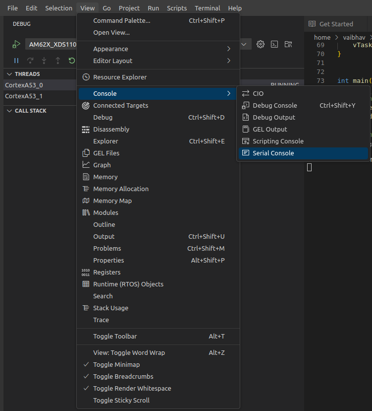
UART Terminal Menu
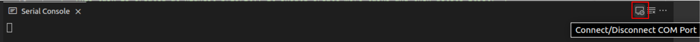
Open New UART Terminal
- Select the UART port, keep other options to default, i.e 115200 baud rate - 8 data bits - No parity - 1 stop bit,
- We use the 3rd USB serial port, as seen in the device manager, for below in the SDK
- Flashing application via UART
- Booting application via UART
- Uboot and Linux terminal
- We use the 3rd USB serial port, as seen in the device manager, as terminal output for examples which run from DM R5F (WKUP R5F)
- We use the 4th USB serial port, as seen in the device manager, as terminal output for examples which run from MCU R5F
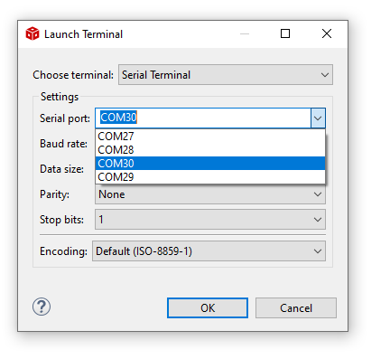
Connect to UART port
- In this screenshot this happens to be COM27 and COM30. However on your machine this could be different. One tip to make sure there is no mistake in identifying the UART port is to disconnect all other UART to USB devices other than this EVM before checking in device manager.
Flash SOC Initialization Binary
- Attention
- This is a recommended one time step that needs to be done before you can load and run programs via CCS
-
If this step fails, maybe due to bad flash in EVM, then try one of the other SOC initialization steps mentioned at SOC Initialization
-
This step needs to be done once unless the OSPI flash has been erased or some other application has been flashed
-
These steps are not applicable for HS-SE devices as JTAG can not be connected to HS-SE devices by default. Follow the steps in Flash a Hello World example for flashing the HS-SE device.
- A quick recap of steps done so far that are needed for the flashing to work
- Make sure the UART port used for terminal is identified as mentioned in Setup UART Terminal
- Make sure python3 is installed as mentioned in Python3
- Make sure you have the EVM power cable and UART cable connected as shown in Cable Connections
- Build all the binaries from the mcu_plus_sdk installation path.
- POWER-OFF the EVM
- Set boot mode to UART BOOTMODE as shown in below image
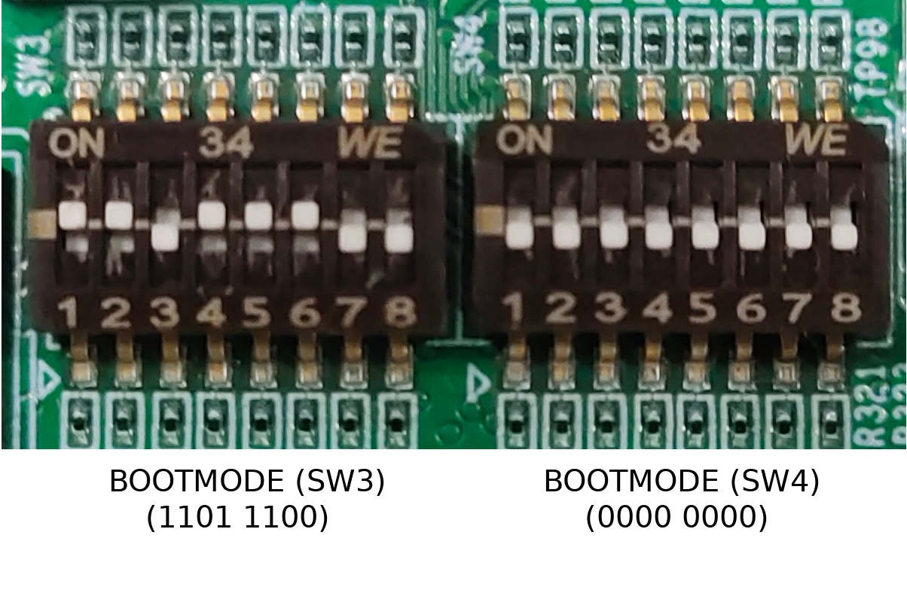
UART BOOT MODE
- POWER-ON the EVM
- You should see character "C" getting printed on the UART terminal every 2-3 seconds as shown below
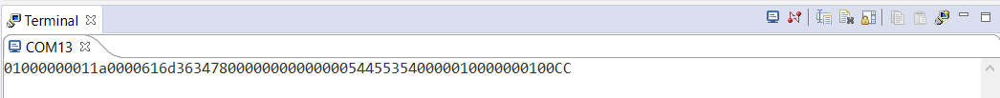
UART output in UART BOOT MODE
- Close the UART terminal as shown below. This is important, else the UART script in next step wont be able to connect to the UART port.

Close UART terminal
- Note
- For HS-FS device, use default_sbl_null_nor_hs_fs.cfg as the cfg file.
Parsing config file ...
Parsing config file ... SUCCESS. Found 4 command(s) !!!
Executing command 1 of 4 ...
Found flash writer ... sending sbl_prebuilt/j722s-evm/sbl_uart_uniflash.release.hs_fs.tiimage
Sent flashwriter sbl_prebuilt/j722s-evm/sbl_uart_uniflash.release.hs_fs.tiimage of size 326351 bytes in 32.69s.
Executing command 2 of 4 ...
Command arguments : --operation=flash-phy-tuning-data
Sent flash phy tuning data in 1.65s.
[STATUS] SUCCESS !!!
Executing command 3 of 4 ...
Command arguments : --file=sbl_prebuilt/j722s-evm/sbl_null.release.hs_fs.tiimage --operation=flash --flash-offset=0x0
Sent sbl_prebuilt/j722s-evm/sbl_null.release.hs_fs.tiimage of size 328143 bytes in 33.82s.
[STATUS] SUCCESS !!!
Executing command 4 of 4 ...
Command arguments : --file=../../examples/drivers/sciclient/sciclient_get_version/j722s-evm/wkup-r5fss0-0_freertos/ti-arm-clang/sciclient_get_version.release.appimage.hs_fs --operation=flash --flash-offset=0x80000
Sent ../../examples/drivers/sciclient/sciclient_get_version/j722s-evm/wkup-r5fss0-0_freertos/ti-arm-clang/sciclient_get_version.release.appimage.hs_fs of size 126459 bytes in 14.91s.
[STATUS] SUCCESS !!!
All commands from config file are executed !!!
- If flashing has failed, see Flash tool error messages and solutions, and resolve the errors.
- If flashing is successful, do the next steps ...
- POWER-OFF the EVM
- Switch the EVM boot mode to OSPI NOR mode as shown below,
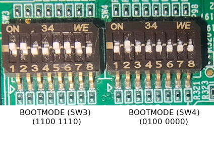
OSPI NOR BOOT MODE
- Attention
- If SBL NULL is used for development, GEL files aren't required for MCU-R5FSS0-0
Additional Details
- Note
- This section has more details on J722S-EVM. This is mainly for reference and can be skipped unless referred to by other pages in this user guide.
SOC Initialization
Before any program can be loaded and run on the EVM, the SOC needs to be initialized. Refer Flash SOC Initialization Binary section on how to flash SOC initialization binary.
BOOT MODE
UART BOOT MODE
This mode is used to flash files to the board flash via UART. It can also be used to boot applications via UART.
BOOTMODE [ 8 : 15 ] (SW4) = 0000 0000
BOOTMODE [ 0 : 7 ] (SW3) = 1101 1100
OSPI NOR BOOT MODE
This mode is used to boot flashed applications via EVM flash like OSPI NOR flash
BOOTMODE [ 8 : 15 ] (SW4) = 0100 0000
BOOTMODE [ 0 : 7 ] (SW3) = 1100 1110
BOOTMODE [ 0 : 7 ] (SW2) = 0XXX XXXX
OSPI SERIAL NAND BOOT MODE
This mode is used to boot flashed applications via EVM flash like OSPI Serial NAND flash
BOOTMODE [ 8 : 15 ] (SW4) = 0000 0000
BOOTMODE [ 0 : 7 ] (SW3) = 1100 0000
BOOTMODE [ 0 : 7 ] (SW2) = 1XXX XXXX
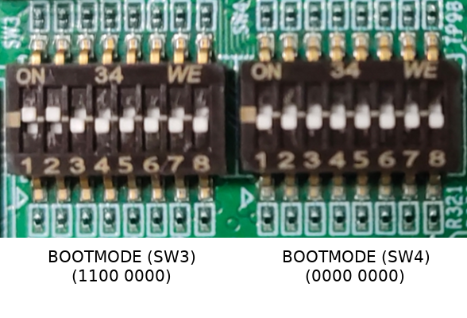
OSPI NAND BOOT MODE
SD BOOT MODE
This mode is used to boot applications via SD card on the EVM.
BOOTMODE [ 8 : 15 ] (SW4) = 0100 0000
BOOTMODE [ 0 : 7 ] (SW3) = 1100 0010
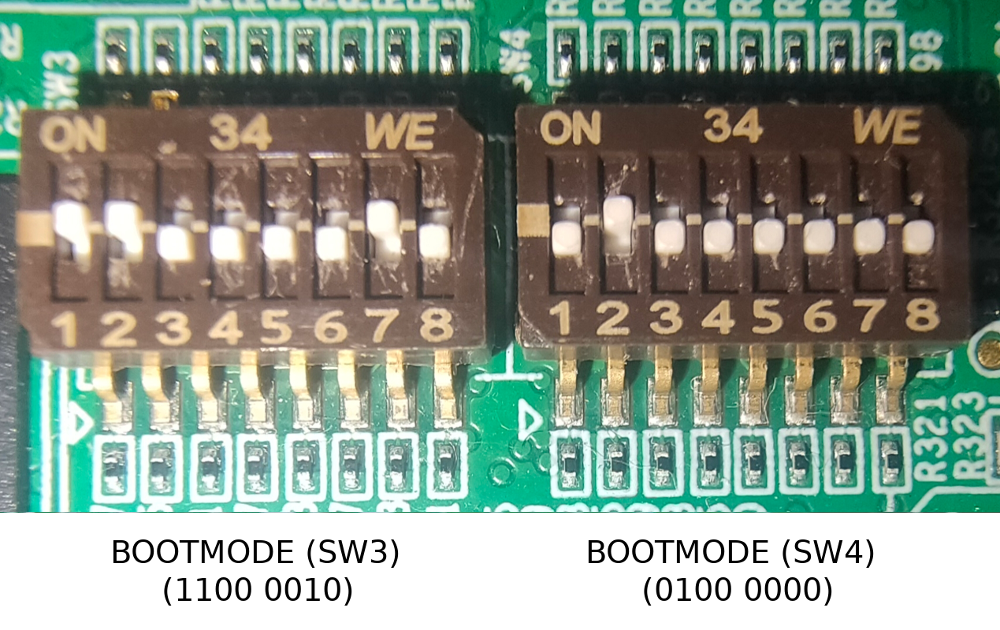
SD BOOT MODE
EMMC BOOT MODE
This mode is used to boot applications via eMMC on the EVM.
BOOTMODE [ 8 : 15 ] (SW4) = 0000 0000
BOOTMODE [ 0 : 7 ] (SW3) = 1101 0011
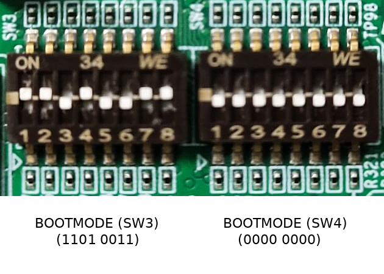
EMMC BOOT MODE
DEVBOOT MODE
BOOTMODE [ 8 : 15 ] (SW4) = 0000 0000
BOOTMODE [ 0 : 7 ] (SW3) = 1101 1111
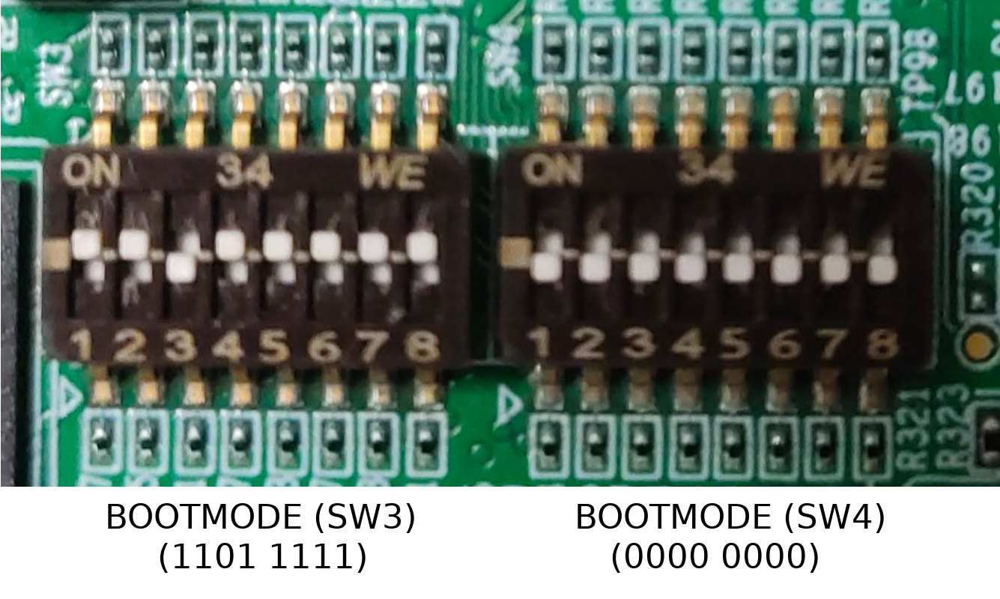
DEV BOOT MODE
Troubleshooting EVM issues
- JTAG connection fails on some EVMs with the following error. Need to connect the JTAG cable after board is powered on.
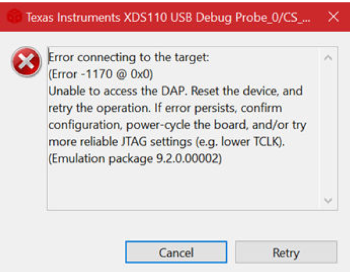
JTAG Connection Error Dialog
 1.8.20
1.8.20